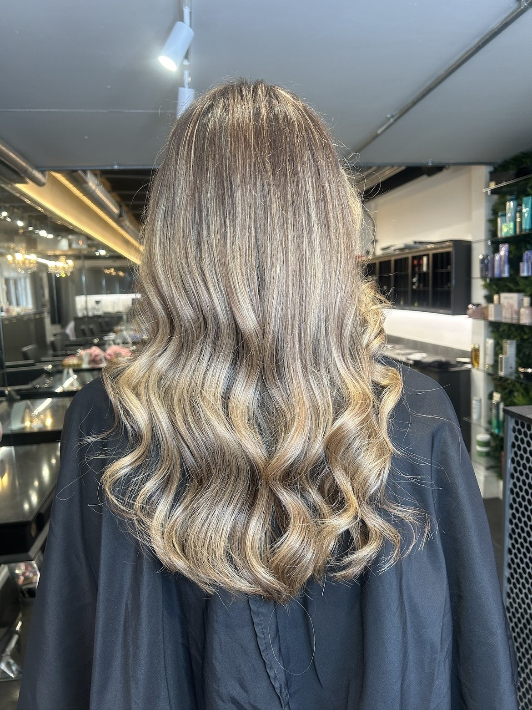
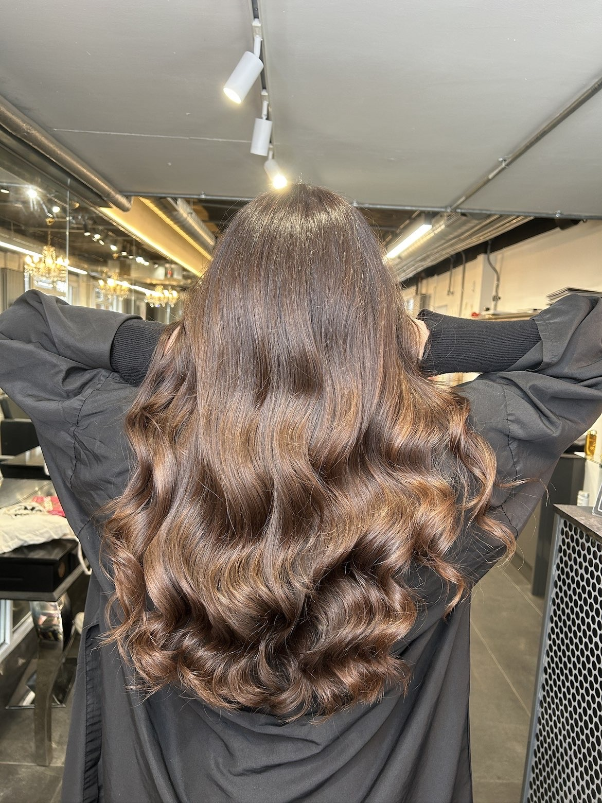
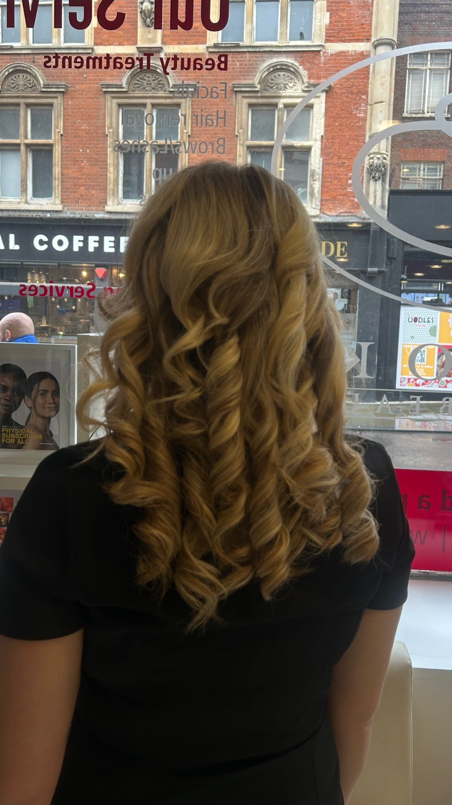
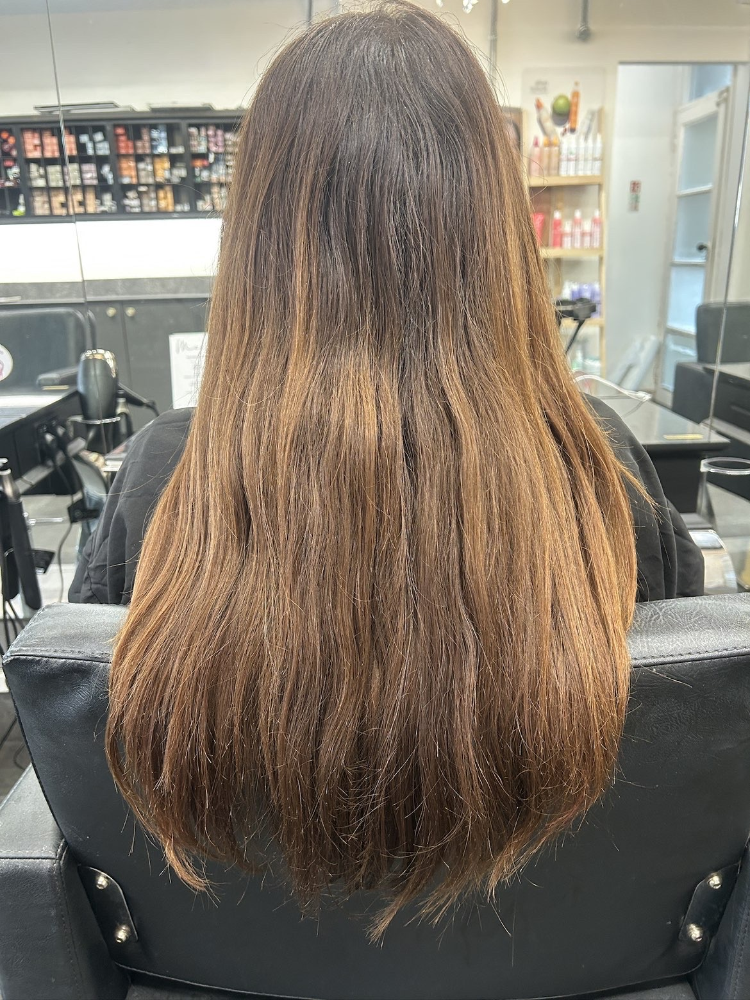

01
Bronde Balayage
Hand-painted lights melted into a soft, rooted base — finished with a glass-wave blow-dry.
Bedfordshire · Hair Stylist & Colourist

I'm Maddison — a stylist obsessed with colour that looks lived-in, grown-out beautifully, and finished with a shine you'll want to show off.
Hand-painted lights melted into a soft, rooted base — finished with a glass-wave blow-dry.

A rich, multi-tonal brunette gloss with depth and dimension, styled into voluminous Hollywood waves.

Warm honey blonde dialled in with a custom toner, set into defined, long-lasting spiral curls.

A glossy, healthy finish with subtle copper warmth running through — sleek, shiny and full of movement.
Every appointment starts with a proper sit-down. I read your hair, your lifestyle and your maintenance, then build a colour that actually fits your life.
Seamless blends and clever placement mean your hair grows out beautifully — fewer salon trips, never an obvious regrowth line.
Bond-building and considered lightening keep your hair in condition. Shine and integrity come first — colour second.
From glass waves to bouncy blow-dries, you leave camera-ready. The styling is half the transformation.
Years behind the chair
Transformations
Bespoke, every time
Maddison Shepherd creates bespoke hair colour and styling for clients looking for soft balayage, dimensional blondes, brunette gloss, foilyage, toner refreshes, healthy cuts, blow-dries and polished waves.
Every appointment starts with a consultation so the colour placement, tone, maintenance plan and finish are built around your hair history, lifestyle and dream result.
You can enquire about full head balayage, foilyage, full highlights, gloss and toner refreshes, cut and blow-dry appointments, blow-dry waves and bespoke hair transformations.
Maddison is a Bedfordshire hair stylist and colourist. Update the booking details with the exact salon location once the public appointment address is ready.
Yes, colour appointments should include a patch test before your service. Arrange this before balayage, highlights, gloss, toner or any colour transformation.
Final pricing is confirmed during consultation because every colour service depends on hair length, condition, colour history, desired result and maintenance plan.
Maddison can recommend aftercare for your exact colour, including gloss or toner maintenance, heat protection and styling advice to keep your finish shiny between visits.
Tell me what you're after and I'll get you in the chair. Appointments are personal to me — you book with Maddison, not just the salon.